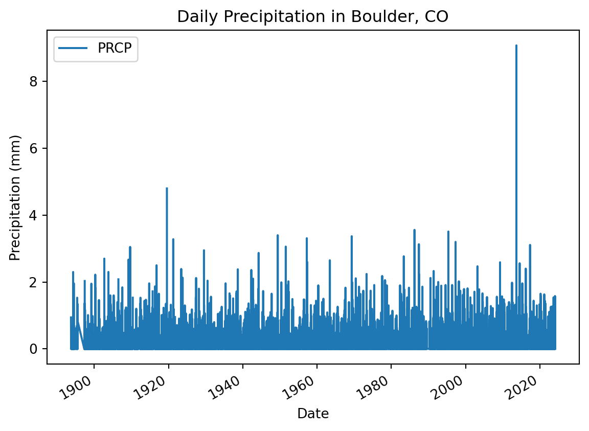

Get started with open reproducible science! (API version)
Get started with open reproducible science!
Open reproducible science makes scientific methods, data and outcomes available to everyone. That means that everyone who wants should be able to find, read, understand, and run your workflows for themselves.
Image from https://www.earthdata.nasa.gov/esds/open-science/oss-for-eso-workshops
Few if any science projects are 100% open and reproducible (yet!). However, members of the open science community have developed open source tools and practices that can help you move toward that goal. You will learn about many of those tools in the Intro to Earth Data Science textbook. Don’t worry about learning all the tools at once – we’ve picked a few for you to get started with.
Create a new Markdown cell below this one using the + Markdown button in the upper left.
In the new cell, answer the following questions using a numbered list in Markdown:
In 1-2 sentences, define open reproducible science.
In 1-2 sentences, choose one of the open source tools that you have learned about (i.e. Shell, Git/GitHub, Jupyter Notebook, Python) and explain how it supports open reproducible science.
Human-readable and Machine-readable
Create a new Markdown cell below this one using the ESC + b keyboard shortcut.
In the new cell, answer the following question in a Markdown quote:
In 1-2 sentences, does this Jupyter Notebook file have a machine-readable name? Explain your answer.
Readable, well-documented scientific workflows are easier to reproduce
As the comic below suggests, code that is hard to read is also hard to get working. We refer to code that is easy to read as clean code.
And because if you just leave it there, it’s going to start contaminating things downstream even if no one touches it directly. (from [XKCD](https://xkcd.com/2138/))
In the prompt below, list 3 things you can do to write clean code, and then list 3 more advantages of doing so.
Edit the text below. You may have to double click.
You can use examples from the textbook, or come up with your own.
Advantages of clean code include: YOUR ANSWER HERE
What the fork?! Who wrote this?
Below is a scientific Python workflow. But something’s wrong – The code won’t run! Your task is to follow the instructions below to clean and debug the Python code below so that it runs.
Tip
Don’t worry if you can’t solve every bug right away. We’ll get there! The most important thing is to identify problems with the code and write high-quality GitHub Issues
At the end, you’ll repeat the workflow for a location and measurement of your choosing.
Alright! Let’s clean up this code. First things first…
::: {.cell .markdown} ## Python packages let you use code written by experts around the world
Because Python is open source, lots of different people and organizations can contribute (including you!). Many contributions are in the form of packages which do not come with a standard Python download.
In the cell below, someone was trying to import the pandas package, which helps us to work with tabular data such as comma-separated value or csv files. ::: ::: {.cell .markdown} ::: {.callout-important icon=“false”} # Your task
1. Correct the typo below to properly import the pandas package under its alias pd. 2. Run the cell to import pandas ::: :::
::: {#0a559897 .cell execution_count=1}
::: {.cell-output .cell-output-error}
::: {.content-visible when-format=“html”}
::: {#1d86449e .cell execution_count=2}
:::
Once you have run the cell above and imported pandas, run the cell below. It is a test cell that will tell you if you completed the task successfully. If a test cell isn’t working the way you expect, check that you ran your code immediately before running the test.
::: {#4c3613bd .cell execution_count=3}
::: {.cell-output .cell-output-stdout}
There are more Earth Observation data online than any one person could ever look at
Here we’re using the NOAA National Centers for Environmental Information (NCEI) Access Data Service application progamming interface (API) to request data from their web servers. We will be using data collected as part of the Global Historical Climatology Network daily (GHCNd) from their Climate Data Online library program at NOAA.
In the cell below, write a 2-3 sentence description of the data source. You should describe:
who takes the data
where the data were taken
what the maximum temperature units are
how the data are collected
Include a citation of the data (HINT: See the ‘Data Citation’ tab on the GHCNd overview page).
YOUR DATA DESCRIPTION AND CITATION HERE üõéÔ∏è
You can access NCEI GHCNd Data from the internet using its API üñ•Ô∏è üì° üñ•Ô∏è
The cell below contains the URL for the data you will use in this part of the notebook. We created this URL by generating what is called an API endpoint using the NCEI API documentation.
Note
An application programming interface (API) is a way for two or more computer programs or components to communicate with each other. It is a type of software interface, offering a service to other pieces of software (Wikipedia).
However, we still have a problem - we can’t get the URL back later on because it isn’t saved in a variable. In other words, we need to give the url a name so that we can request in from Python later (sadly, Python has no ‘hey what was that thingy I typed yesterday?’ function).
# DO NOT MODIFY THIS TEST CELLresp_url = _points =0iftype(resp_url)==str: points +=3print('\u2705 Great work! You correctly called your url variable.')else:print('\u274C Oops - your url variable was not called correctly.')iflen(resp_url)==218: points +=3print('\u2705 Great work! Your url is the correct length.')else:print('\u274C Oops - your url variable is not the correct length.')print('You earned {} of 6 points for defining a url variable'.format(points))
✅ Great work! You correctly called your url variable.
✅ Great work! Your url is the correct length.
You earned 6 of 6 points for defining a url variable
Download and get started working with NCEI data
The pandas library you imported can download data from the internet directly into a type of Python object called a DataFrame. In the code cell below, you can see an attempt to do just this. But there are some problems…
You’re ready to fix some code!
Your task is to:
Leave a space between the # and text in the comment and try making the comment more informative
Make any changes needed to get this code to run. HINT: The my_url variable doesn’t exist - you need to replace it with the variable name you chose.
Modify the .read_csv() statement to include the following parameters:
index_col='DATE' – this sets the DATE column as the index. Needed for subsetting and resampling later on
parse_dates=True – this lets python know that you are working with time-series data, and values in the indexed column are date time objects
na_values=['NaN'] – this lets python know how to handle missing values
Clean up the code by using expressive variable names, expressive column names, PEP-8 compliant code, and descriptive comments
Make sure to call your DataFrame by typing it’s name as the last line of your code cell Then, you will be able to run the test cell below and find out if your answer is correct.
# DO NOT MODIFY THIS TEST CELLtmax_df_resp = _points =0ifisinstance(tmax_df_resp, pd.DataFrame): points +=1print('\u2705 Great work! You called a DataFrame.')else:print('\u274C Oops - make sure to call your DataFrame for testing.')print('You earned {} of 2 points for downloading data'.format(points))
✅ Great work! You called a DataFrame.
You earned 1 of 2 points for downloading data
HINT: Check out the type() function below - you can use it to check that your data is now in DataFrame type object
# Check that the data was imported into a pandas DataFrametype(boulder_df)
pandas.core.frame.DataFrame
Clean up your DataFrame
Use double brackets to only select the columns you want in your DataFrame
Make sure to call your DataFrame by typing it’s name as the last line of your code cell Then, you will be able to run the test cell below and find out if your answer is correct.
KeyError: "None of [Index(['some_col', 'another_col'], dtype='object')] are in the [columns]"
See our solution!
# Clean up the DataFrameboulder_df = boulder_df[['PRCP', 'TOBS']]boulder_df
PRCP
TOBS
DATE
1893-10-01
0.94
NaN
1893-10-02
0.00
NaN
1893-10-03
0.00
NaN
1893-10-04
0.04
NaN
1893-10-05
0.00
NaN
...
...
...
2024-02-14
0.00
41.0
2024-02-15
0.00
39.0
2024-02-16
0.20
23.0
2024-02-17
0.22
23.0
2024-02-18
0.00
42.0
46112 rows × 2 columns
# DO NOT MODIFY THIS TEST CELLtmax_df_resp = _points =0summary = [round(val, 2) for val in tmax_df_resp.mean().values]if summary == [0.05, 54.53]: points +=4print('\u2705 Great work! You correctly downloaded data.')else:print('\u274C Oops - your data are not correct.')print('You earned {} of 5 points for downloading data'.format(points))
✅ Great work! You correctly downloaded data.
You earned 4 of 5 points for downloading data
Plot the precpitation column (PRCP) vs time to explore the data
Plotting in Python is easy, but not quite this easy:
boulder_df.plot()
You’ll always need to add some instructions on labels and how you want your plot to look.
Important
Change dataframe to yourDataFrame name.
Change y= to the name of your observed temperature column name.
Use the title, ylabel, and xlabel parameters to add key text to your plot.
Adjust the size of your figure using figsize=(x,y) where x is figure width and y is figure height
HINT: labels have to be a type in Python called a string. You can make a string by putting quotes around your label, just like the column names in the sample code (eg y='TOBS').
# Plot the temperature vs timeyour_dataframe_name.plot(y='temperature_col_name', figsize=(10,6))
NameError: name 'your_dataframe_name' is not defined
Your task: Playing with code
Replace dataframe with the name of your dataframe whenever it appears.
Replace the title and axis labels with something more appropriate for this data.
Run the code below.
# Plot the data using .plotboulder_df.plot( y='the_precipitation_column', title='Title Goes Here', xlabel='Horizontal Axis Label Goes Here', ylabel='Vertical Axis Label Goes Here')
KeyError: 'the_precipitation_column'
See our solution!
# Plot the data using .plotboulder_df.plot( y='PRCP', title='Daily Precipitation in Boulder, CO', xlabel='Date', ylabel='Precipitation (mm)')

Want an EXTRA CHALLENGE?
There are many other things you can do to customize your plot. Take a look at the pandas plotting galleries and the documentation of plot to see if there’s other changes you want to make to your plot. Some possibilities include:
Remove the legend since there’s only one data series
Increase the figure size
Increase the font size
Change the colors
Use a bar graph instead (usually we use lines for time series, but since this is annual it could go either way)
Add a trend line
Not sure how to do any of these? Try searching the internet, or asking an AI!
Convert units
Modify the code below to add a column that includes temperature in Celsius. The code below was written by your colleague. Can you fix this so that it correctly calculates temperature in Celsius and adds a new column?
# Convert to celciusboulder_df['TCel'] = boulder_df['temperature_col_name'] -32*5/9boulder_df
KeyError: 'temperature_col_name'
See our solution!
# Convert to celciusboulder_df['TCel'] = (boulder_df['TOBS'] -32) *5/9boulder_df
/tmp/ipykernel_2782/860760448.py:2: SettingWithCopyWarning:
A value is trying to be set on a copy of a slice from a DataFrame.
Try using .loc[row_indexer,col_indexer] = value instead
See the caveats in the documentation: https://pandas.pydata.org/pandas-docs/stable/user_guide/indexing.html#returning-a-view-versus-a-copy
boulder_df['TCel'] = (boulder_df['TOBS'] - 32) * 5 / 9
PRCP
TOBS
TCel
DATE
1893-10-01
0.94
NaN
NaN
1893-10-02
0.00
NaN
NaN
1893-10-03
0.00
NaN
NaN
1893-10-04
0.04
NaN
NaN
1893-10-05
0.00
NaN
NaN
...
...
...
...
2024-02-14
0.00
41.0
5.000000
2024-02-15
0.00
39.0
3.888889
2024-02-16
0.20
23.0
-5.000000
2024-02-17
0.22
23.0
-5.000000
2024-02-18
0.00
42.0
5.555556
46112 rows × 3 columns
# DO NOT MODIFY THIS TEST CELLtmax_df_resp = _points =0ifisinstance(tmax_df_resp, pd.DataFrame): points +=1print('\u2705 Great work! You called a DataFrame.')else:print('\u274C Oops - make sure to call your DataFrame for testing.')summary = [round(val, 4) for val in tmax_df_resp.mean().values]if summary == [0.0543, 54.5313, 12.5174]: points +=4print('\u2705 Great work! You correctly converted to Celcius.')else:print('\u274C Oops - your data are not correct.')print('You earned {} of 5 points for converting to Celcius'.format(points))
✅ Great work! You called a DataFrame.
✅ Great work! You correctly converted to Celcius.
You earned 5 of 5 points for converting to Celcius
Want an EXTRA CHALLENGE?
As you did above, rewrite the code to be more expressive
Using the code below as a framework, write and apply a function that converts to Celcius. > Functions let you reuse code you have already written
You should also rewrite this function and parameter names to be more expressive.
def a_function(a_parameter):"""Convert temperature to Celcius"""return a_parameter # Put your equation in heredataframe['celcius_column'] = dataframe['fahrenheit_column'].apply(convert)
NameError: name 'dataframe' is not defined
See our solution!
def convert_to_celcius(fahrenheit):"""Convert temperature to Celcius"""return (fahrenheit -32) *5/9boulder_df['TCel'] = boulder_df['TOBS'].apply(convert_to_celcius)
/tmp/ipykernel_2782/3586141558.py:5: SettingWithCopyWarning:
A value is trying to be set on a copy of a slice from a DataFrame.
Try using .loc[row_indexer,col_indexer] = value instead
See the caveats in the documentation: https://pandas.pydata.org/pandas-docs/stable/user_guide/indexing.html#returning-a-view-versus-a-copy
boulder_df['TCel'] = boulder_df['TOBS'].apply(convert_to_celcius)
Subsetting and Resampling
Often when working with time-series data you may want to focus on a shorter window of time, or look at weekly, monthly, or annual summaries to help make the analysis more manageable.
Read more
Read more about subsetting and resampling time-series data in our Learning Portal.
For this demonstration, we will look at the last 30-40 years worth of data and resample to explore a summary from each year that data were recorded.
Your task
Replace start-year and end-year with the years that begin and end the window of time that you would like to explore
Replace dataframe with the name of your data
Replace new_variable_name with something more expressive
Call your new variable
Run the cell
# Subset the data to look at 1983-2023boulder_1983_2023 = boulder_df['1983':'2023']boulder_1983_2023
PRCP
TOBS
TCel
DATE
1983-01-01
0.0
NaN
NaN
1983-01-02
0.0
NaN
NaN
1983-01-03
0.0
NaN
NaN
1983-01-04
0.0
NaN
NaN
1983-01-05
0.0
NaN
NaN
...
...
...
...
2023-12-27
0.0
41.0
5.000000
2023-12-28
0.0
NaN
NaN
2023-12-29
0.0
39.0
3.888889
2023-12-30
0.0
38.0
3.333333
2023-12-31
0.0
33.0
0.555556
14629 rows × 3 columns
# DO NOT MODIFY THIS TEST CELLtmax_df_resp = _points =0ifisinstance(tmax_df_resp, pd.DataFrame): points +=1print('\u2705 Great work! You called a DataFrame.')else:print('\u274C Oops - make sure to call your DataFrame for testing.')summary = [round(val, 2) for val in tmax_df_resp.mean().values]if summary == [0.06, 55.67, 13.15]: points +=4print('\u2705 Great work! You correctly converted to Celcius.')else:print('\u274C Oops - your data are not correct.')print('You earned {} of 5 points for converting to Celcius'.format(points))
✅ Great work! You called a DataFrame.
✅ Great work! You correctly converted to Celcius.
You earned 5 of 5 points for converting to Celcius
Now we are ready to calculate annual statistics
Here you will resample the 2013-2023 data to look the annual mean values.
Resample your data
Replace new_variable_name with the variable you created in the cell above where you subset the data
Replace 'TIME' with a 'W', 'M', or 'Y' depending on whether you’re doing a weekly, monthly, or yearly summary
Replace STAT with a sum, min, max, or mean depending on what kind of statistic you’re interested in calculating.
Replace resampled_data with a more expressive variable name
Call your new variable
Run the cell
# Resample the data to look at yearly mean valuesboulder_yearly_mean = boulder_1983_2023.resample('Y').mean()boulder_yearly_mean
/tmp/ipykernel_2782/2796985930.py:2: FutureWarning: 'Y' is deprecated and will be removed in a future version, please use 'YE' instead.
boulder_yearly_mean = boulder_1983_2023.resample('Y').mean()
PRCP
TOBS
TCel
DATE
1983-12-31
0.068588
53.319749
11.844305
1984-12-31
0.050656
50.601093
10.333940
1985-12-31
0.047781
52.354571
11.308095
1986-12-31
0.058493
55.616438
13.120244
1987-12-31
0.070740
54.205479
12.336377
1988-12-31
0.046311
54.650273
12.583485
1989-12-31
0.058585
55.400943
13.000524
1990-12-31
0.053782
59.463504
15.257502
1991-12-31
0.058000
54.498623
12.499235
1992-12-31
0.047486
54.556164
12.531202
1993-12-31
0.062365
50.829341
10.460745
1994-12-31
0.046000
38.715789
3.730994
1995-12-31
0.080630
54.792818
12.662676
1996-12-31
0.059235
55.233516
12.907509
1997-12-31
0.078055
54.274725
12.374847
1998-12-31
0.061068
55.931507
13.295282
1999-12-31
0.071099
56.079452
13.377473
2000-12-31
0.043434
56.719780
13.733211
2001-12-31
0.049863
56.457534
13.587519
2002-12-31
0.038027
56.638356
13.687976
2003-12-31
0.060329
57.230137
14.016743
2004-12-31
0.074235
55.420765
13.011536
2005-12-31
0.047726
56.871233
13.817352
2006-12-31
0.052904
57.772603
14.318113
2007-12-31
0.047205
56.616438
13.675799
2008-12-31
0.046503
56.175342
13.430746
2009-12-31
0.057216
54.212575
12.340319
2010-12-31
0.055644
55.854795
13.252664
2011-12-31
0.061068
55.975275
13.319597
2012-12-31
0.042760
59.857534
15.476408
2013-12-31
0.093562
55.454795
13.030441
2014-12-31
0.064575
55.367123
12.981735
2015-12-31
0.073753
56.710744
13.728191
2016-12-31
0.047131
57.836066
14.353370
2017-12-31
0.061617
60.129129
15.627294
2018-12-31
0.052740
57.005479
13.891933
2019-12-31
0.057644
54.426997
12.459443
2020-12-31
0.046721
57.691460
14.273033
2021-12-31
0.056658
57.538462
14.188034
2022-12-31
0.051479
56.139726
13.410959
2023-12-31
0.062740
55.694215
13.163453
Plot your resampled data
# Plot mean annual temperature values
Describe your plot
We like to use an approach called “Assertion-Evidence” for presenting scientific results. There’s a lot of video tutorials and example talks available on the Assertion-Evidence web page. The main thing you need to do now is to practice writing a message or headline rather than descriptions or topic sentences for the plot you just made (what they refer to as “visual evidence”).
For example, it would be tempting to write something like “A plot of maximum annual temperature in Boulder, Colorado over time (1983-2023)”. However, this doesn’t give the reader anything to look at, or explain why we made this particular plot (we know, you made this one because we told you to)
Some alternatives that are more of a starting point for a presentation or conversation are: * Boulder, CO experienced cooler than average temperatures in 1995 * Temperatures in Bouler, CO appear to be on the rise over the past 40 years * Maximum annual temperatures in Boulder, CO are becoming more variable over the previous 40 years
We could back up some of these claims with further analysis included later on, but we want to make sure that our audience has some guidance on what to look for in the plot.
Your turn: pick a new location and/or measurement to plot üåè üìà
Below (or in a new notebook!), recreate the workflow you just did in a place that interests you OR with a different measurement. See the instructions above to adapt the URL that we created for Boulder, CO using the NCEI API. You will need to make your own new Markdown and Code cells below this one, or create a new notebook.
If you didn’t already, go back to the code you modified about and write more descriptive comments so the next person to use this code knows what it does.
Make sure to Restart and Run all up at the top of your notebook. This will clear all your variables and make sure that your code runs in the correct order. It will also export your work in Markdown format, which you can put on your website.
BONUS: Create a shareable Markdown of your work
Below is some code that you can run that will save a Markdown file of your work that is easily shareable and can be uploaded to GitHub Pages. You can use it as a starting point for writing your portfolio post!

)](https://imgs.xkcd.com/comics/wanna_see_the_code.png)